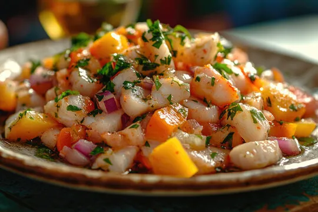
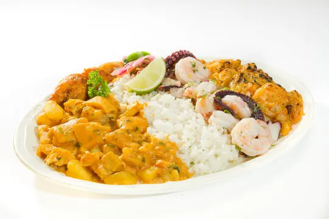
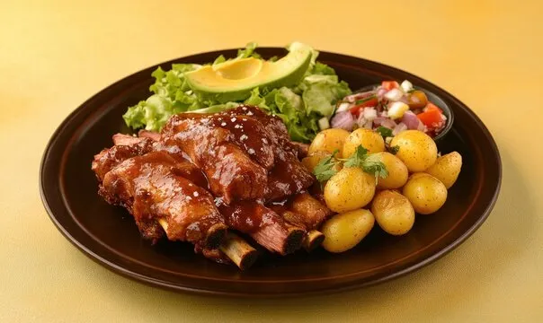
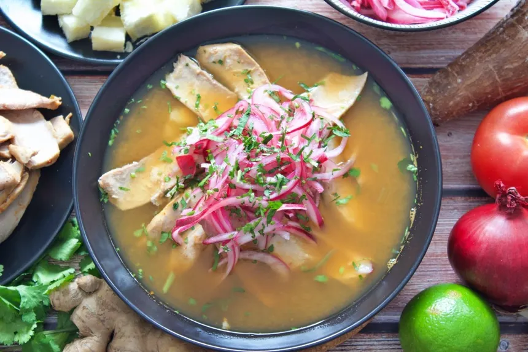

Présentation de l'Équateur
L’Équateur est un petit pays d’Amérique du Sud traversé par la ligne équatoriale, d’où il tire son nom. Malgré sa taille modeste, il offre une diversité naturelle et culturelle incroyable : des plages tropicales aux volcans enneigés, des Andes aux forêts amazoniennes, sans oublier les incontournables îles Galápagos.
Les îles Galápagos & les tortues géantes
Situées à 1 000 km au large du continent, les îles Galápagos sont un véritable sanctuaire de la nature, classé au patrimoine mondial de l’UNESCO. Ces îles abritent une faune unique, notamment la célèbre tortue géante des Galápagos, symbole de longévité et de sagesse. On y trouve également des iguanes marins, des fous à pieds bleus et des paysages volcaniques époustouflants.
Plats Traditionnels de l'Équateur

Ceviche
Plat emblématique de la côte équatorienne, le ceviche est préparé avec des fruits de mer frais marinés dans du citron vert, accompagné d'oignons rouges, de coriandre et de piment.

Guatita
Guatita est un plat traditionnel équatorien à base de tripes de bœuf (appelées “guatitas” en argot local) mijotées dans une sauce épaisse aux arachides, épices et pommes de terre. Ce plat savoureux est souvent accompagné de riz blanc, d’avocat frais et parfois d’un peu de citron vert pour relever le goût.

Hornado
Porc rôti traditionnel de la région de la Sierra, mariné aux épices et cuit lentement. Servi avec des pommes de terre, du maïs et une salade fraîche.

Encebollado
Soupe de poisson typique de la côte, préparée avec du thon, du yuca et beaucoup d'oignons. Considéré comme le plat national officieux de l'Équateur.